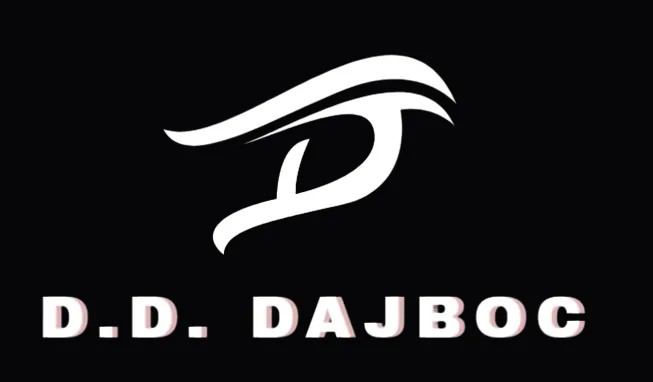
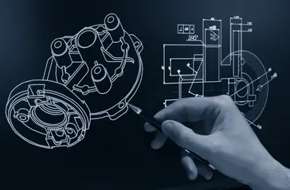
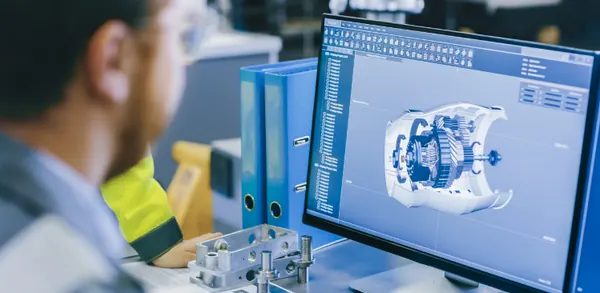
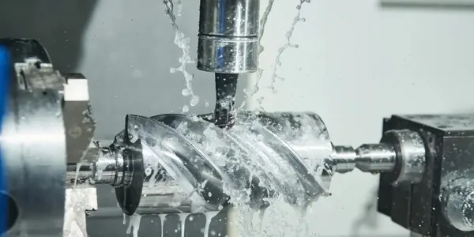
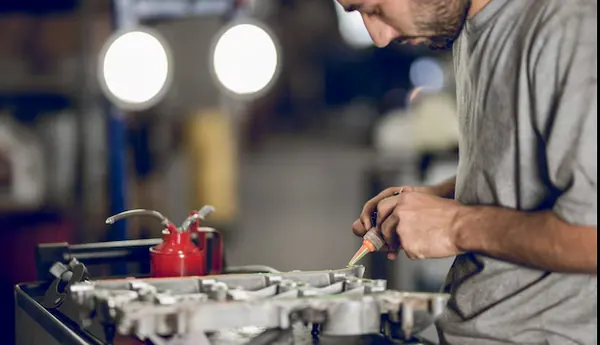
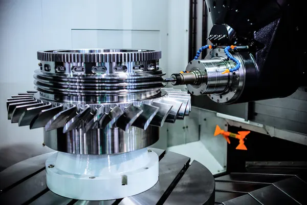
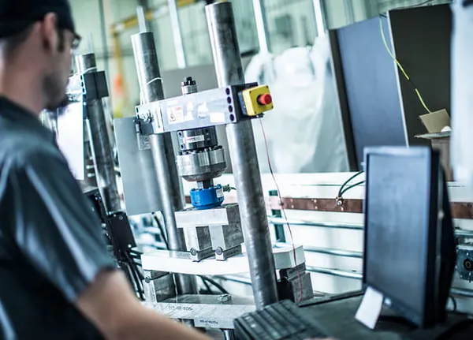
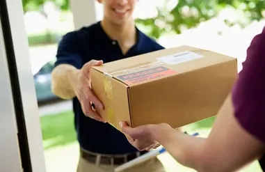

Prelucrări CNC
de Precizie
Strunjire & frezare CNC · Proiectare utilaje la comandă · Piese metalice de precizie fabricate în Satu Mare, România.
Valorile Noastre
Principiile care ghidează fiecare decizie, design și livrare pe care le facem.

DajbocTechDon
S.R.L.
Fondată de Daniel Dan, DajbocTechDon S.R.L. din Satu Mare, România, este specializată în proiectarea și fabricarea diverselor dispozitive în mai multe industrii. Angajamentul nostru față de calitate și inovație ne diferențiază.
Cu echipamente CNC avansate realizăm intern strunjire, frezare și prelucrări mecanice de precizie ale componentelor metalice, testând fiecare piesă înainte de livrare — gestionăm întregul proces de producție, de la proiectare la livrare, cu control al calității în fiecare etapă.
- Echipamente CNC Avansate
- Testare Internă
- Control Calitate
- Multi-Industrie
- Soluții Personalizate
- Serviciu Complet
Serviciile Noastre
Soluții complete de la colectarea cerințelor inițiale până la livrarea finală.







Procesul Nostru
Un proces structurat în opt pași care garantează calitatea la fiecare etapă.
Colectare Informații și Cerințe
Stabilirea obiectivelor proiectului, colectarea și documentarea nevoilor, confirmarea domeniului.
Proiectare
Crearea de design-uri de produs personalizate pentru sectoarele automotive, industrial, agricol și energetic.
Simulare
Simularea capacității și conformității înainte de începerea oricărei producții.
Fabricare
Echipamente CNC avansate pentru fabricare de precizie și producție completă internă.
Asamblare
Asamblarea componentelor individuale în produse finite complete.
Control
Gestionarea completă a procesului de producție cu control al calității în fiecare etapă.
Testare
Testare riguroasă pentru a asigura că toate componentele îndeplinesc standardele de siguranță.
Livrare
Gestionarea completă a logisticii pentru livrarea produselor finite în siguranță și la timp.
Industriile Pe Care Le Deservim
Livrând soluții de precizie în diverse sectoare cu expertiză specializată.
Automotive
Componente și ansambluri de precizie proiectate pentru standardele exigente ale industriei auto.
Industrial
Dispozitive industriale și utilaje personalizate construite pentru fiabilitate în medii de înaltă performanță.
Agricol
Utilaje agricole inovatoare și dispozitive concepute pentru a îmbunătăți eficiența și producția pe câmp.
Energie
Soluții avansate care susțin generarea de energie curată, eficientă și sigură.
Întrebări Frecvente
Ce ne întreabă cel mai des clienții despre prelucrările CNC și fabricația la comandă.
Ce servicii de prelucrări CNC oferă DajbocTechDon?
DajbocTechDon execută strunjire, frezare, găurire și prelucrări mecanice de precizie prin așchiere pe echipamente CNC avansate. Toate prelucrările, testele și controlul calității se realizează intern, în atelierul nostru din județul Satu Mare, de la prototip unicat până la serii mici și medii.
Unde este situată firma DajbocTechDon și în ce zone livrează?
Atelierul nostru se află pe Str. Valceleni Nr. 69, Turt, județul Satu Mare, România (447330). Lucrăm cu clienți din toată România și din Uniunea Europeană, fiind bine poziționați pentru firmele din nord-vestul României, Ungaria și Europa Centrală.
Puteți proiecta și construi un utilaj la comandă, de la zero?
Da. Gestionăm ciclul complet: colectarea și confirmarea cerințelor, proiectare mecanică, simulare, fabricare CNC, asamblare, control al producției, testare și livrare finală. Puteți veni cu un desen tehnic, un model 3D sau doar cu problema de rezolvat.
În ce industrii lucrează DajbocTechDon?
Proiectăm și fabricăm dispozitive, componente și utilaje pentru industria auto, industrială, agricolă și energetică, inclusiv echipamente personalizate acolo unde nu există o soluție standard.
Acceptați piese unicat și serii mici de producție?
Da. Realizăm piese unicat la comandă, prototipuri, piese de schimb și serii mici și medii. Fiecare componentă este fabricată și testată intern, astfel încât calitatea este controlată la fiecare pas.
Cum pot cere o ofertă de preț pentru prelucrări CNC?
Trimiteți desenul tehnic sau modelul 3D prin formularul de contact de pe această pagină, pe email la contact@dajboctechdon.com sau sunați la +40 744 987 550. Analizăm specificațiile și revenim cu ofertă de preț și termen de execuție.
Ia Legătura
Gata să îți începi proiectul? Ne-ar plăcea să auzim de la tine.
Să construim ceva excepțional împreună.
Indiferent dacă ai un proiect specific în minte sau vrei să explorezi cum te putem ajuta, echipa noastră este pregătită să discute nevoile tale.